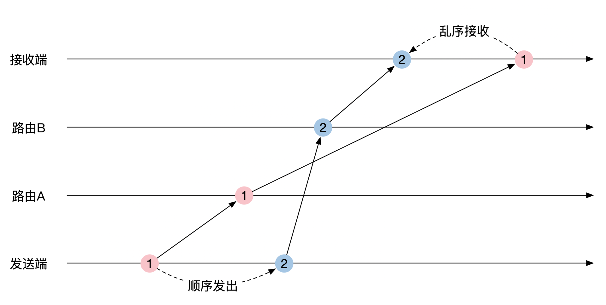
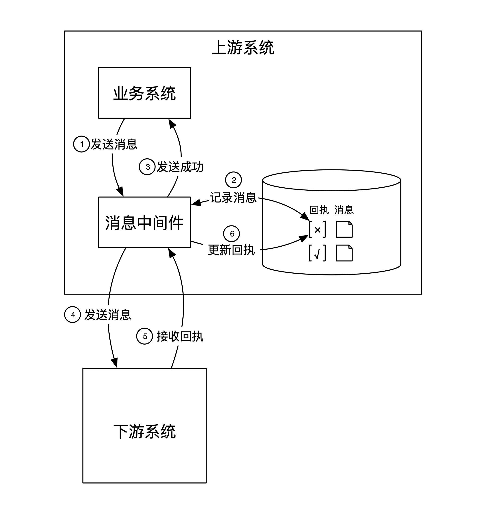
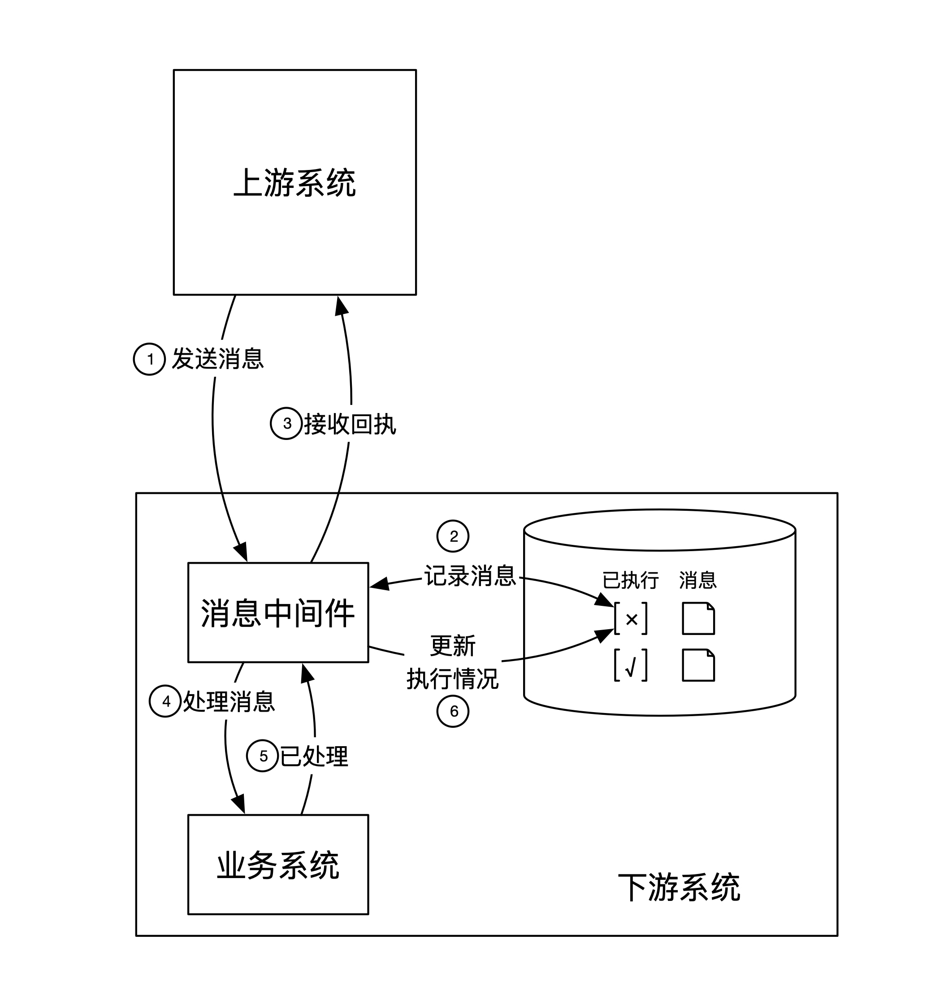
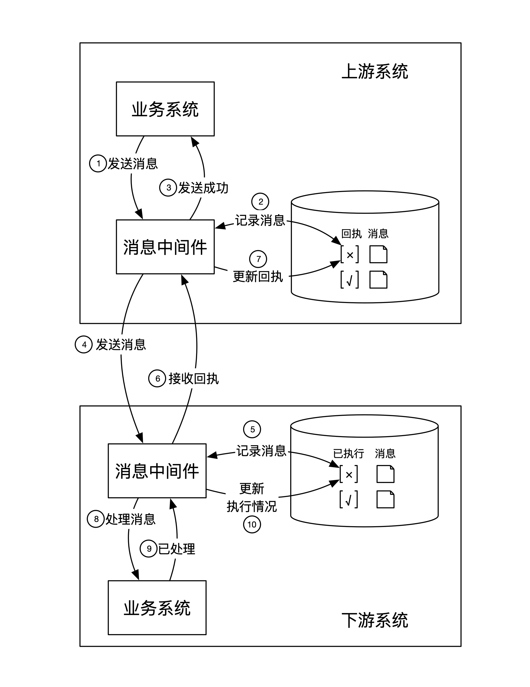
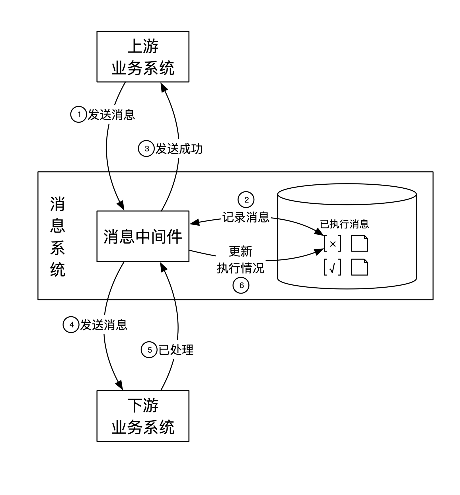
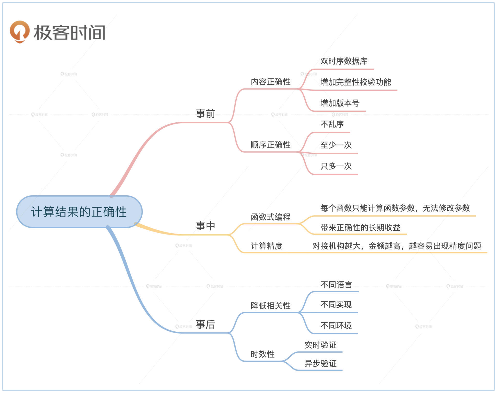

- 00 开篇词 如何成为金融级人才？.md.html
- 01 业务初探：扫了二维码之后发生了什么？.md.html
- 02 原理解读：如何理解第三方支付的业务逻辑和系统组件？.md.html
- 03 产品大观：不同金融业务都有哪些技术实现要点？.md.html
- 04 领域驱动设计（上）：如何设计金融软件顶层架构？.md.html
- 05 领域驱动设计（下）：如何设计统一的金融业务模型？.md.html
- 06 计算输入的正确性：怎么选择正确时间的数据？.md.html
- 07 计算过程的正确性：如何设计正确的数据处理架构？.md.html
- 08 计算结果的正确性：怎么保证计算结果是正确的？.md.html
- 09 数据传输的质量：金融业务对数据传输有什么要求？.md.html
- 10 数据存储的合理性：金融业务可以不用关系型数据库吗？.md.html
- 11 系统优化：如何让金融系统运行得更快？.md.html
- 12 正确性分级（上）：单机无备份有哪几种不同的一致性？.md.html
- 13 正确性分级（中）：多机无容灾有哪几种不同的一致性实现？.md.html
- 14 正确性分级（下）：多机有容灾有哪几种不同的一致性？.md.html
- 15 分布式正确性的存在性（上）：什么情况下不存在分布式共识算法？.md.html
- 16 分布式一致性（下）：怎么理解最简单的分布式一致性算法？.md.html
- 17 正确性案例（上）：如何实现分布式的事件溯源架构？.md.html
- 18 正确性案例（中）：常见分布式数据方案的设计原理是什么？.md.html
- 19 正确性案例（下）：如何在运行时进行数据系统的动态分库？.md.html
- 20 容灾（上）如何实现正确的跨机房实时容灾？.md.html
- 21 容灾（下）：如何通过混沌工程提高系统稳定性？.md.html
- 春节策划第1期 分布式金融系统知识，你掌握了多少？.md.html
- 春节策划第2期 读书如抽丝，为你推荐一些我读过的好书.md.html
- 春节策划第3期 如何运用架构知识解读春运买票和手游案例？.md.html
- 答疑集锦（一） 思考题解析与外汇架构知识拓展.md.html
- 答疑集锦（三） 思考题解析与数据库底层实现.md.html
- 答疑集锦（二） 思考题解析与账务系统优化.md.html
- 结束语 金融之道，与你同行，虽远尤欣.md.html
- 捐赠
08 计算结果的正确性：怎么保证计算结果是正确的？
你好，我是任杰。这一讲我想和你聊一聊怎么保证计算结果的正确性。
在前面几节课里我们学习了如何保证数据输入的正确性，如何用事件溯源的架构来保证数据计算的正确性。但这只能保证一个组件是正确的。系统里还有很多其他组件，我们也需要保证它们的交互也是正确的，这就需要一个系统性的指导方案。所以，这节课我们一起来看看如何保证最终计算结果正确性。
从抽象的角度来讲，任何一个计算过程都分为三个步骤：收到请求、处理请求和输出结果，也就是分为事前、事中和事后三个步骤。接下来，我们就从这三个方面逐一分析，看看如何系统性地保证最终结果的正确性。
事前
如果计算的输入错了，计算的结果就很难正确。输入不正确有两种可能性。一种是单个数据内容不正确，另一种是多个数据之间的顺序关系不正确。接下来我们就看看怎么解决这两方面的问题。
内容正确性
在这里我们可以假设，系统组件之间的信息交流方式是上游系统负责将数据传输给下游系统。所以上游系统需要保证数据内容的正确性。
我们在第6节课提到过，在数据可以被修改的情况下，我们很难保证所有人都能使用正确的数据。所以金融公司需要用双时序数据库来保证我们能查询到正确时间的数据。
我还想提醒你，尽管你找到了正确时间的数据，但数据本身还是有可能会出问题，比如在读取的时侯出现部分数据丢失，或者在传输的过程中出现了数据损坏。这时候我们需要给数据增加完整性校验的功能，比如在存储的时侯增加HMAC验证，这些也都是常规操作。
最后，也是最容易忽略的一点，就是我们需要给数据增加版本号。版本号代表了当前的数据格式，下游可以用来做校验。这么做在进行系统升级后的向下兼容处理时有奇效，所以一般建议你加上。
顺序正确性
顺序的正确性是指上游发给下游的多个消息之间需要保证正确的顺序。这不再只是上游一个人的独角戏，下游也要参与，上下游两方面通力合作。
顺序问题简单来说就是上游按顺序发送了1、2、3这三个消息，下游需要按顺序收到1、2、3这三个消息。这就表示接收消息需要满足这三点：顺序不能乱，个数不能少，也不能多。那我们来看下应该怎么保证。
不乱序
请你注意，这里的不乱序指的是接收端不乱序，对发送端没有什么要求。其实由于网络通讯协议是异步的，就算发送端按顺序发送，接收端也可能会乱序。
TCP解决乱序问题的方案是在发送方在每个消息里包含了一个自增ID。接收方将所有收到的乱序消息先放到一个消息缓冲区。如果自己等待的ID出现在了缓冲区，再从缓冲区里将这个消息捞出来。
在一般情况下，TCP自带的方案就能很好地解决乱序问题。但是在云计算的处理框架下，消息的发送方可能会通过多个TCP链接来给接收方发消息。这样的话虽然单个TCP内消息是不乱序的，但是多个TCP链接之间还是有可能乱序。
举个例子。发送端和接收端中间有两个路由，分别是路由A和路由B。发送端一前一后分别给这两个路由发了一个消息。这两个路由将消息传递给接收端的速度不一样，最终导致消息的接收顺序错位。示意图如下：

解决乱序的方法很简单。发送方和接收方之间可以实现和TCP完全一样的乱序解决方案，也就是通过自增ID和消息缓冲区来解决乱序。
从理论上来讲，你需要的不乱序其实是要求系统具有线性一致性（linearizability）。这个内容，我们会在第13节课“多机无容灾有哪几种不同的一致性实现”里给你详细讲解。
消息投放至少一次
上游系统架构
通俗来说，至少一次的意思就是消息不要丢。在理想情况下，发送方把消息发送出去之后就可以不管了，消息系统或者网络会将保证接收方一定会收到这个消息。
不过事实本不完美，我们面对的是一个随时会丢失消息的不稳定网络。在没法完全相信网络的情况下，发送方只有在收到接收方的回执了，这时才能肯定接收方确实已经收到了消息。
可是这里有个悖论。回执消息是接收方传递给发送方的消息，也会碰到消息丢失问题。这就是非确定性网络所带来的消息丢失问题。
这个问题的解决方法也很简单，那就是发送方需要一直不断地重发消息，直到收到了至少一次接收方的回执。从逻辑上来讲，从一次回执消息的接收可以推算出至少一次的消息接收。
由于消息的发送和金融系统的主营业务无关，消息处理部分一般会单独作为一个消息中间件来处理。按照我们在第4节课的分类，消息系统属于通用组件。
这个消息中间件有自己的数据库，负责存放所有需要投放的消息。每个消息还有一个回执标识位，负责记录对应的消息回执是否已经收到。如果这个回执标识位一直为空，消息中间件会不断地往下游发送消息。整个处理过程分为6个步骤：
1.业务系统将消息发给进程内的消息中间件。
2.消息中间件将该消息保存在数据库中，并将回执位设置为空。
3.消息保存好后，消息中间件通知业务系统发送成功。
4.消息中间件将消息发送给下游系统。这时候消息中间件会分情况做处理：如果没有收到下游系统的回执，消息中间件要持续发送消息；如果上游系统重启，消息中间件会从数据库中找到所有还没有收到回执的消息，重发给下游系统。
5.下游系统收到消息后返回回执消息。
6.消息中间件收到回执消息后，改变数据库中的回执消息位。
架构的简单示意图如下：

虽然你很可能一眼就看出来，上面这个架构能保证至少一次的要求。不过，我还是要给你说说里面蕴含的一些道理。
至少一次指的是下游至少收到了一次消息，这是下游系统的客观状态。这个状态和上游系统无关，因此我们需要保证就算上游系统出了问题，系统也能正确记录下游状态。这种出了问题还能正确记录状态的能力，我们叫作数据库事务。这就是为什么我们需要用具有事务能力的数据库来存储回执状态。
另外，回执消息还有一个数学特性叫作幂等性（idempotency）。幂等性指的是同一个操作执行多次的结果和执行一次一样。我们将回执位设置为成功多次和一次的结果是完全相同的，所以回执位的多次更新不会改变逻辑的正确性。正因为有了事务和幂等性这两个保证，上面的架构才能保证消息投放至少一次。
下游系统架构
讲完了上游系统作为发送方的架构，我们还需要弄清楚作为接收方的下游系统应该如何处理。
常见的下游系统错误是先返回消息回执，然后再处理消息。如果下游系统重启了，就会导致下游系统当前消息丢失。而这时上游系统已经收到了回执，也不会重发消息。这样这个消息就从系统中整个丢失了。
解决方法和上游系统类似，下游系统也会通过独立的消息中间件，实现和上游系统的正确交互。消息中间件在收到上游发过来的消息后先记录到数据库，然后再通知下游的业务系统处理。整个过程也同样分为6步：
1.上游系统给下游系统的消息中间件发送消息。
2.消息中间件收到消息后记录到数据库。此时消息是未执行状态。
3.消息中间件发送回执给上游系统。
4.消息中间件将消息传给下游的业务系统进行处理。此时消息中间件要处理以下几种情况：如果消息中间件没有收到下游业务系统已执行完的通知，需要持续发送消息给下游业务系统；如果系统重启，中间件要从数据库中找到所有未执行的消息，然后按正确的顺序发给下游业务系统。
5.下游的业务系统处理完成后，通知消息中间件。
6.消息中间件将消息变为已执行状态。
架构的简单示意图如下：

和上游系统的逻辑一样，下游系统也是通过事务和幂等性来保证消息反馈的正确性。
上下游结合
前面我们分别学习了上游系统和下游系统应该分别如何处理消息。如果我们将两者的架构图结合起来看的话，就是下面这个样子：

这个架构有一个隐含的假设：上下游分别由不同的人来设计。所以上下游系统需要在假设对方是正确的情况下，各自维护自己的逻辑。那我们可以再想想，如果有人同时设计上下游两个系统，有没有可能将架构设计得更加简洁呢？
你可能已经想到了。只需要将上下游的消息中间件剥离出来，然后合并在一起，这样系统就分成了3个组件：上下游系统和消息系统。
这时候上下游之间也需要6步来完成所有的交互，比之前两者分开的情况节省了4步。当中也有一些消息检查和重发的机制，你可以仔细想想都在哪些地方。合并之后的架构图如下：

上面这个架构图有很多名字，比如消息系统、企业总线等等。我们在开篇词提到过要透过现象看本质。你需要重点关注它究竟解决了什么问题，为什么可以解决这些问题，以及在不同环境下的不同使用方法。
消息投放至多一次
刚才我们在保证消息投放至少一次的时侯，也制造了一个问题，那就是下游系统有可能收到多条同样的消息。
比如你本来给人转了一笔钱，可在系统内却转了多笔一样金额的钱，这样的系统显然是不可接受的。要想解决很简单，我们可以将消息的处理变为具有幂等性的操作。
实现幂等性的方法是去掉重复的消息，只保留第一个消息，这个行为简称去重。去重要求你能够判断不同的消息是否重复，这就要求消息有唯一标识符。
唯一标识符有两种方法可以生成，一种是消息自带，另一种是由上游系统生成。
消息如果想要自带唯一标识符的话，就需要用到自己内部的属性，也分为两种情况。一种是利用和业务有关的属性，比如支付订单号。另一种是用和业务无关的属性。这时候一般会将消息当作是数据库的一行记录，利用数据库对应的主键或者具有完整性校验功能的字段作为唯一标识符，比如MD5或者SHA1。
上游系统有时候也能帮助生成消息的唯一标识符。前面我们说到保证消息不乱序的解决办法时，就用到了自增ID。这个自增ID就可以用来作为消息的唯一标识符。当然了，这里有个要求，就是消息系统需要能控制消息的格式。
总结一下，如果上游系统有自增ID，就可以用这个ID来去重。否则就需要用到业务或者数据库的某些唯一性来去重。
事中
对于消息处理正确性而言，事前准备工作是最重要的，这也是为什么前面花了大量篇幅去讲它。而消息的处理则跟架构关系不大，更多和软件工程相关，我们可以从函数式编程和计算精度两个角度理解。
函数式编程
上节课我们提到过，事件溯源和数学计算很类似，所以才能一步一步证明正确性。其实有一类编程语言也和数学计算很类似，叫作函数式编程语言。
在函数式编程语言里，所有的数据都不可以被修改，所有函数也不允许有随机性。这样我们就可以将函数随意地组合，然后生成下一个确定性的新函数。这种可以将函数像乐高一样随意组合也能保持正确性的特性（Composibility），保证了我们在编写程序的时候，程序不会因为代码的增加而导致正确性变化。
这就是函数式编程语言在软件工程上相对于其他编程语言的优势。我们在开篇词提到过金融行业注重投资回报比。函数式编程语言有很高的学习成本，但是长期来看它的正确性维护成本很低。
所以函数式编程语言虽然小众，在金融行业也有很大规模的应用。比如高盛公司发明的函数式编程语言Slang和用它实现的数据系统SecDB，摩根士丹利发明了A+和修改了Scala，Jane Street的Ocaml，以及渣打银行的Haskell。我们在第10节课“金融业务应该如何选择数据存储类型”里会给你介绍KDB/Q，这也是一个函数式编程语言和基于它的数据库。
计算精度
现在编程语言众多，数据传输格式多种多样，数据中心的硬件系统也多，很容易出现精度问题。你可能对这个问题没有什么感觉，因为只有在金额特别大的时侯才有可能出现精度的问题。
我给你举个例子。在2015年的时侯，175千万亿津巴布韦元可以换5美元。在2018年，日本的GDP约为500万亿日元。如果不小心设计，这么大的金额很可能会出现存储方面的精度问题。我们在设计金融系统的时侯需要知道可能的业务边界。业务对接的机构越大，资金的金额越高，越容易出现计算精度的问题。
所以如果你有志成为一个伟大的架构师，致力于解决大型金融机构的系统架构问题，那么对于计算精度你一定要提前做好应对。
事后
计算完毕不代表正确性相关的工作就结束了，我们还需要在事后对计算的结果进行验证。
举一个实际发生过的例子：我们在一次计算中偶然发现算出来的金融合同市场风险的值非常高。因为市场风险的各个数值之间有一定的数学逻辑关系，我们通过数学计算判断确实是某一个数值偏高。
由于我们的系统采用了双时序数据库和事件溯源，可以在云计算环境一直重复这个有问题的计算。最后终于发现是某台机器CPU的一个核的浮点数寄存器出了问题，在计算的时候会出现随机数值。CPU的厂商解释说，可能是宇宙射线的问题损坏了CPU。
这个例子说明错误的计算结果并不一定是人为的，周边的软硬环境也有可能导致错误。因此我们在对计算结果进行验证的时候，一定要选择不同的计算环境，这样才能降低和之前计算结果的相关性。
降低计算结果和验证结果的相关性有一些常见思路。首先我们可以选择不同的编程语言。其次可以选择由不同的人实现。最后还可以选择不同的架构设计和云服务提供商。
那么，验证多少次你才会放心呢？在极其重要的场景，比如飞机或者航天器材上面的软件系统，一般会验证3次。因为这些系统和人命相关。这种场景下同时会有4个系统在一起工作。这4个系统彼此验证，只有在至少3个结果完全一样的情况下才会向外输出结果。而金融软件的要求一般没有这么高，所以验证1次基本就够了。
验证结果还有一个时效性的问题。你可以选择实时验证，在验证通过之后再往外公布计算结果，或者可以选择异步验证，在公布结果之后再择机进行验证。
实时验证的好处是可以防范于未然，在造成不好的影响前解决问题，但是代价是增加系统的延时。异步验证刚好相反，可能会对外造成不好的影响，因此需要业务有事后补偿的能力。在金融系统中常见的日切或者对账其实就是异步验证的解决方案。
小结
这节课我们从事前、事中和事后三个部分学习了如何保证整体计算结果的正确性。
事前我们可以做好准备工作。首先我们要保证数据内容是正确的。这要求我们使用正确的查询，比如双时序数据库。同时我们还不能假设结果的完整性，也要进行验证。
保证了数据内容正确性之后，接下来还要保证数据的接收顺序也是正确的。这要求数据的接收不能乱序，而且保证数据只处理一次。
事中的正确性要通过软件工程来解决，而不是通过架构设计。金融系统推荐使用函数式编程语言。在实现过程中还需要注意计算精度的问题。
事后需要验证结果的正确性。验证的时候尽量不要和之前的计算有任何关系。一般验证1次就可以，多的可以验证3次。验证的时间可以选择实时验证，或者异步验证。如果采用异步验证，需要业务方对应的业务补偿能力。
总之，单个组件的正确性并不能保证整个系统的正确性。我们需要在架构设计上将组件之间不确定的交互行为变得确定，同时在软件工程实现上要选择一些不容易出错的解决方案。

思考题
我们在讲如何保证消息至多投放一次的时候，说过可以用数据库来做去重工作。不过数据库的容量一般是有限的。
假如你设计的系统预期会运行10年以上。数据库由于存储不了这么久的数据，一定会将过期不用的数据进行归档后删掉。这会造成你用来去重的数据有一部分会不见了。这样如果来了一个请求，这个请求恰好用了被删掉的ID，系统就会重复处理。那么你应该如何做呢？
欢迎你在留言区分享你的思考或者疑问。如果这篇文章让你有所收获，也欢迎转发给你的朋友，一起学习进步。
© 2019 - 2023 Liangliang Lee. Powered by gin and hexo-theme-book.